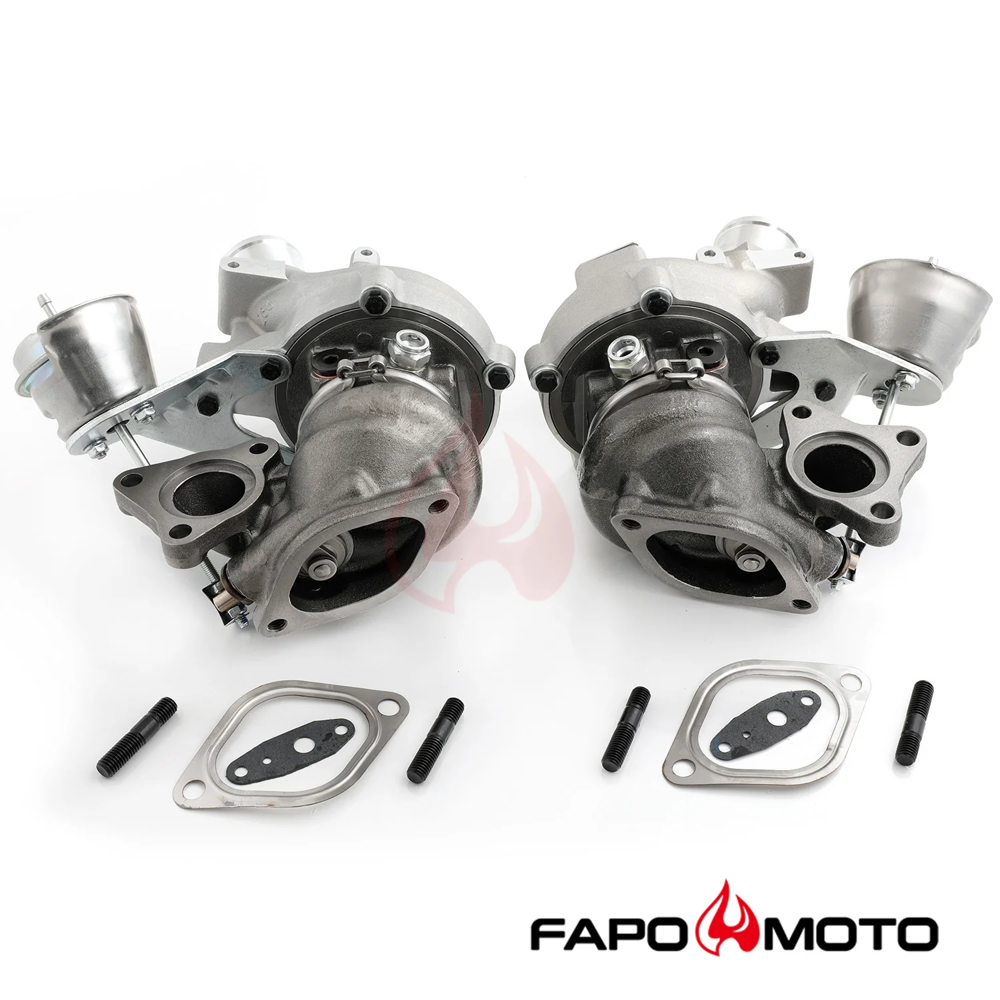

1 / 7FAPO Twin turbosprężarkas Kompatybilne z 2013-2016 Ford F-150 Pickup Expedition Transit Navigator 3.5L V8 K03 0469 0470 FT028610+FT028710
Zastosowanie: kompatybilny z Turbosprężarka Ford F150 Pickup 3,5 l z lat 2013-2016 Turbosprężarka Ford Expedition 3,5 l na lata 2015-2016 Turbosprężarka Lincoln Navigator 3,5 l na lata 2015-2016 Turbosprężarka Ford Transit 150 3,5L z lat 2015-2016 Turbosprężarka Ford Transit 250 3,5L z lat 2015-2016 Turbosprężarka Ford Transit 350 3,5L z lat 2015-2016 Cechy produktu: -Konstrukcja OE, turbosprężarka o maksymalnej moc…
Application: compatible with 2013-2016 Ford F150 Pickup 3.5L Turbocharger 2015-2016 Ford Expedition 3.5L Turbocharger 2015-2016 Lincoln Navigator 3.5L Turbocharger 2015-2016 Ford Transit 150 3.5L Turbocharger 2015-2016 Ford Transit 250 3.5L Turbocharger 2015-2016 Ford Transit 350 3.5L Turbocharger Features: -OE design,the turbos handel max power 600HP -High quality replacements for factory parts,Excellent quality, Excellent durability,Optimizing Vehicle Performance -It can simply instead of a factory part -The center rotating bearing housing is designed to work with factory oil lines and coolant lines -Component balanced, dynamic balanced than VSR HIGH SPEED balanced using a state of the balancing machine, avg 0.5 mg or less -The accessories in the photos are included -1 year warranty for any manufacturing defect Technical Specifications : Durable Compressor Wheel: 12(6+6) blades, Size: 36.7*52.5*51 mm Turbine Wheel: 9 blades, Size: 40.4*45 mm Part Number: 53039880469, 53039700469 53039880470, 53039700470 OE Number: DL3E6C879AF , DL3E6C879AE , DL3E6C879AD DL3E6K682AE, DL3E6K682AA, DL3E6K682AB, DL3E6K682AC
3447 PLN
Opis produktu
Zastosowanie:
Turbosprężarka Ford Expedition 3,5 l na lata 2015-2016
Turbosprężarka Lincoln Navigator 3,5 l na lata 2015-2016
Turbosprężarka Ford Transit 150 3,5L z lat 2015-2016
Turbosprężarka Ford Transit 250 3,5L z lat 2015-2016
Turbosprężarka Ford Transit 350 3,5L z lat 2015-2016
-Może po prostu zamiast części fabrycznej
-Obudowa łożyska obrotowego centralnie została zaprojektowana do współpracy z fabrycznymi przewodami olejowymi i przewodami chłodziwa
- Komponent zrównoważony, zrównoważony dynamicznie niż VSR HIGH SPEED, zrównoważony przy użyciu stanu wyważarki, średnio 0,5 mg lub mniej
-Akcesoria widoczne na zdjęciach są wliczone w cenę
-1 rok gwarancji na wszelkie wady produkcyjne
DL3E6K682AC
kompatybilny z
Turbosprężarka Ford F150 Pickup 3,5 l z lat 2013-2016Turbosprężarka Ford Expedition 3,5 l na lata 2015-2016
Turbosprężarka Lincoln Navigator 3,5 l na lata 2015-2016
Turbosprężarka Ford Transit 150 3,5L z lat 2015-2016
Turbosprężarka Ford Transit 250 3,5L z lat 2015-2016
Turbosprężarka Ford Transit 350 3,5L z lat 2015-2016
Cechy produktu:
-Konstrukcja OE, turbosprężarka o maksymalnej mocy 600 KM
-Wysokiej jakości zamienniki części fabrycznych, doskonała jakość, doskonała trwałość, optymalizacja wydajności pojazdu-Może po prostu zamiast części fabrycznej
-Obudowa łożyska obrotowego centralnie została zaprojektowana do współpracy z fabrycznymi przewodami olejowymi i przewodami chłodziwa
- Komponent zrównoważony, zrównoważony dynamicznie niż VSR HIGH SPEED, zrównoważony przy użyciu stanu wyważarki, średnio 0,5 mg lub mniej
-Akcesoria widoczne na zdjęciach są wliczone w cenę
-1 rok gwarancji na wszelkie wady produkcyjne
Dane techniczne:
Trwałe koło sprężarki: 12 (6 + 6) łopatek, rozmiar: 36,7 * 52,5 * 51 mm
Koło turbiny: 9 łopatek, rozmiar: 40,4*45 mmNumer części:
53039880469, 53039700469
53039880470, 53039700470Numer OE:
DL3E6C879AF, DL3E6C879AE, DL3E6C879AD
DL3E6K682AE, DL3E6K682AA, DL3E6K682AB,DL3E6K682AC
Application:
2015-2016 Ford Expedition 3.5L Turbocharger
2015-2016 Lincoln Navigator 3.5L Turbocharger
2015-2016 Ford Transit 150 3.5L Turbocharger
2015-2016 Ford Transit 250 3.5L Turbocharger
2015-2016 Ford Transit 350 3.5L Turbocharger
-It can simply instead of a factory part
-The center rotating bearing housing is designed to work with factory oil lines and coolant lines
-Component balanced, dynamic balanced than VSR HIGH SPEED balanced using a state of the balancing machine, avg 0.5 mg or less
-The accessories in the photos are included
-1 year warranty for any manufacturing defect
DL3E6K682AC
compatible with
2013-2016 Ford F150 Pickup 3.5L Turbocharger2015-2016 Ford Expedition 3.5L Turbocharger
2015-2016 Lincoln Navigator 3.5L Turbocharger
2015-2016 Ford Transit 150 3.5L Turbocharger
2015-2016 Ford Transit 250 3.5L Turbocharger
2015-2016 Ford Transit 350 3.5L Turbocharger
Features:
-OE design,the turbos handel max power 600HP
-High quality replacements for factory parts,Excellent quality, Excellent durability,Optimizing Vehicle Performance-It can simply instead of a factory part
-The center rotating bearing housing is designed to work with factory oil lines and coolant lines
-Component balanced, dynamic balanced than VSR HIGH SPEED balanced using a state of the balancing machine, avg 0.5 mg or less
-The accessories in the photos are included
-1 year warranty for any manufacturing defect
Technical Specifications:
Durable Compressor Wheel: 12(6+6) blades, Size: 36.7*52.5*51 mm
Turbine Wheel: 9 blades, Size: 40.4*45 mmPart Number:
53039880469, 53039700469
53039880470, 53039700470OE Number:
DL3E6C879AF , DL3E6C879AE , DL3E6C879AD
DL3E6K682AE, DL3E6K682AA, DL3E6K682AB,DL3E6K682AC
FAPO Polska
Ten produkt obsługujemy lokalnie
Autoryzowana obsługa
FAPO Polska prowadzi katalog, kontakt i zamówienia bez odsyłania klienta do zewnętrznych sklepów.
Dobór po aucie
Sprawdzamy dopasowanie produktu do pojazdu, rocznika i wersji przed finalizacją zamówienia.
Wsparcie po zakupie
Masz kontakt w Polsce w sprawach zamówień, wysyłki, gwarancji i zwrotów.